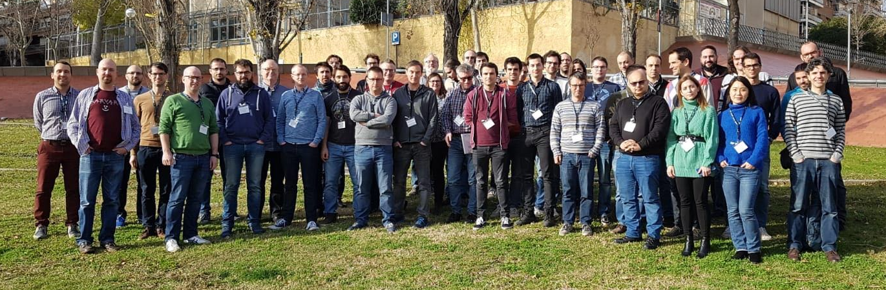

9th EasyBuild User Meeting
23-25 April 2024 @ Umeå, Sweden

(group picture from 5th EasyBuild User Meeting in Barcelona - Jan 2020)
Practical info - Registration - Organisation - Program - Sponsors - Contact
EasyBuild is a software build and installation framework that allows you to manage (scientific) software on High Performance Computing (HPC) systems in an efficient way.
The EasyBuild User Meeting is an open and highly interactive event that provides a great opportunity to meet fellow EasyBuild enthusiasts, discuss related topics, and learn about new aspects of the tool.
It is intended for people that are already familiar with EasyBuild, ranging from occasional users to EasyBuild core developers, maintainers, and experts. Topics will be less introductory in nature than during other events like EasyBuild tutorials.
The program includes presentations by both EasyBuild users and developers, as well as talks about open source projects relevant to the EasyBuild community.
Practical information
The 9th EasyBuild User Meeting will be held Tue-Thu 23-25 April 2024 in Umeå (Sweden).
The venue is Umeå University (more details will follow)
This is an open meeting, anybody interested is welcome to join.
Attendance is free of cost, but registration is required (see below).
Recommended hotels
- Hotell Björken (~5min walk to EUM'24 venue)
- Hotell Gamla Fängelset (~25min walk to EUM'24 venue)
- Elite Hotel Mimer (~30min walk to EUM'24 venue)
- Clarion Collection Hotel Uman (~30min walk to EUM'24 venue)
- U&Me Hotel (~35min walk to EUM'24 venue)
- Comfort Hotel Winn (~35min walk to EUM'24 venue)
- Stora Hotellet i Umeå (~35min walk to EUM'24 venue)
- Scandic Plaza Umeå (~35min walk to EUM'24 venue)
- Clarion Hotel Umeå (~40 min walk to EUM'24 venue)
(more info soon)
Zoom & YouTube
We intend to provide live streaming of all presentations that are part of the EUM'24 agenda, via Zoom and the EasyBuild YouTube channel.
Remote attendees will be able to join Zoom sessions for interactive discussions with the speakers.
Note that only registered attendees will have access to the Zoom sessions!
We also intend to record all sessions, and will make the recordings available shortly after the live presentations, via the EasyBuild YouTube channel.
Q&A via #eum channel in EasyBuild Slack
Remote attendees will be ale to submit questions via the #eum channel in the EasyBuild Slack. Comments in YouTube will be disabled for the live streaming events.
If you are not logged in to the EasyBuild Slack yet, you can request an invitation to join via https://easybuild.io/join-slack.
Registration
If you plan to attend one or more presentations, you must register. Seats are limited.
Although attendance is free and open to anyone, having a good view on how well the different sessions will be attended is important for us to be well prepared.
(registration will open soon)
Organisation
- Åke Sandgren (Umeå University, Sweden)
- Lars Viklund (Umeå University, Sweden)
- Lara Peeters (HPC-UGent, Belgium)
- Kenneth Hoste (HPC-UGent, Belgium)
Program
The 9th EasyBuild User Meeting consists of 3 days of presentations and hands-on sessions.
Please note that all times are in Central European Summer Time (CEST, equivalent to UTC+2).
We intentionally left ample time in between talks to allow for Q&A, interactive discussions, switching between speakers and breaks.
Overview
(subject to change!)
- Thu 23 April 2024
- (09:00-18:00 - more info on talks & sessions soon)
- Wed 24 April 2024
- (09:00-18:00 - more info on talks & sessions soon)
- Thu 25 April 2024 (focused on EESSI project)
- (09:00-18:00 - more info on talks & sessions soon)
Sponsors
(more info soon)
Contact
In case of questions, please contact eum@lists.ugent.be.
EUM'23 (London) - EUM'22 (virtual) - EUM'21 (virtual) - EUM'20 (Barcelona) EUM'19 (Louvain-la-Neuve) - EUM'18 (Amsterdam) - EUM'17 (Jülich) - EUM'16 (Ghent)